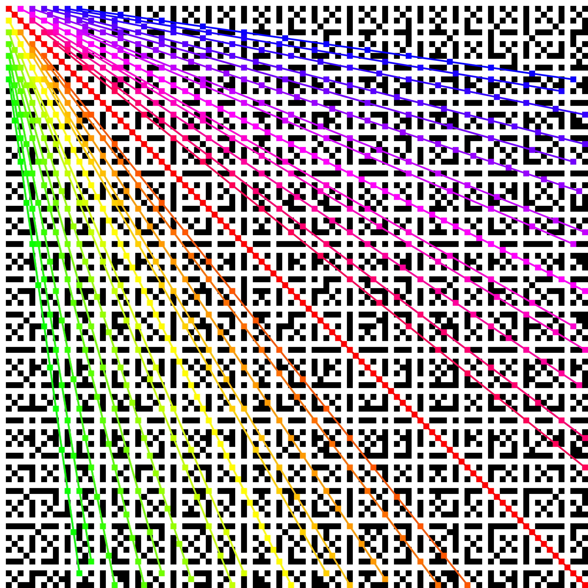
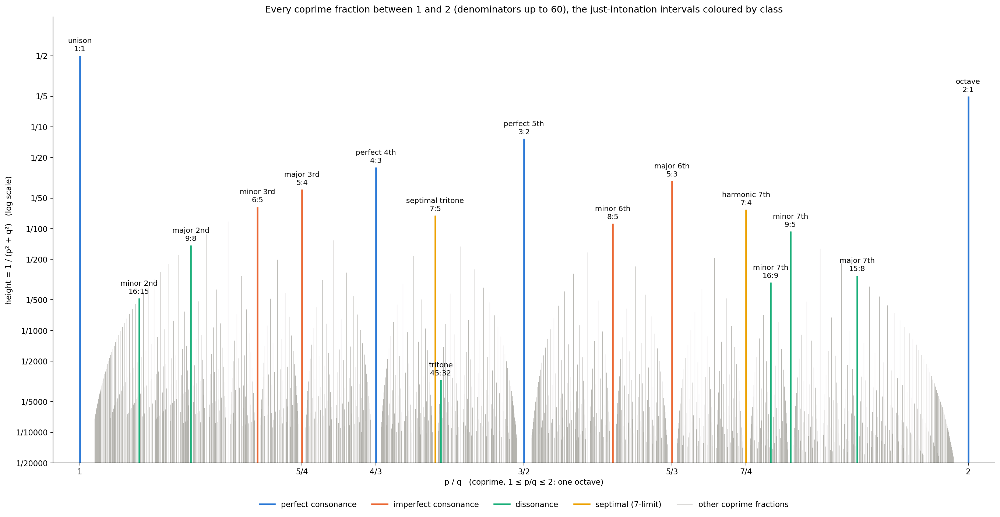
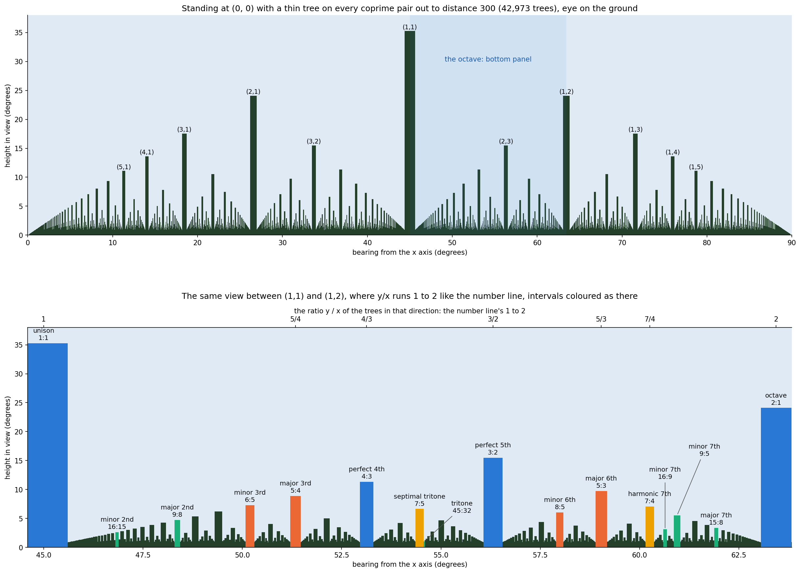

Coprime pairs and musical intervals
A pair of whole numbers (x, y) is coprime when gcd(x, y) = 1, that is, when x/y is already in lowest terms. On a grid the coprime pairs form rays out of the corner. As knots, they are the Turk's heads that tie with one strand. On a number line from 1 to 2, they are the intervals inside one octave. On an oscilloscope, they are the Lissajous figures. Standing at the corner, they are the trees you can see.
Whose ideas these are. The author came up with the connections on this page independently: the coprime grid and its rays, the number line with heights 1/(p² + q²) and its match to the musical intervals, Turk's head knots, turning Lissajous figures, the view from the orchard, and the ratio π² : 6 (at the age of 14). Some had been found before by others, and the page names them where known (Euclid's orchard, Thomae's function, Pólya, Tenney, Euler, Ptolemy, Helmholtz) for history and comparison. The last section, Further connections, is different: none of it is the author's.
Explore the grid
x runs left to right, y top to bottom, starting at (1, 1). A square is light when x and y are coprime and dark when they share a factor. Pick a square to see its pair, the ray it lies on, the Turk's head knot with x leads and y bights, and the Lissajous figure x : y.
- gcd
- 1
- lowest terms
- 5/3
- ray
- step 5 across, 3 down
The Lissajous figure is x = sin(a·t + δ), y = sin(b·t) with a and b the pair. It is drawn as a wire on a turning drum: the part of the wire on the far side is faint. Turning the drum is the same as letting δ drift, which is what an oscilloscope shows when two tones are a little out of tune.
One idea, five views
Everything on this page is one question asked several ways: is the ratio a : b in lowest terms?
| Coprime a : b | a : b with a common factor d | What makes it simple | |
|---|---|---|---|
| Grid | a light square, the first point of its ray | a dark square, point d of the ray a/d : b/d | near the corner |
| Music | an interval, frequencies in the ratio a : b | the same interval as a/d : b/d | small a and b: more shared overtones, more consonant |
| Turk's head | a leads, b bights, one strand | d separate strands, each an a/d × b/d pattern | few leads and bights |
| Lissajous | one closed curve, touching each side a times and the top b times | the a/d : b/d curve traced d times | few lobes, a steady figure |
| Orchard | a tree you can see from (0, 0) | hidden behind the tree at (a/d, b/d) | near you, so tall in view |
- Coprime pairs are fractions already in lowest terms. Every other pair is a multiple of one, which is why the dark squares line up in rays from the corner: a whole ray is one ratio.
- Musical intervals are those ratios heard as pitch. Two notes a : b apart line up every a cycles of one and b of the other, so small coprime numbers sound smooth: 1:1, 2:1, 3:2, 4:3, 5:3, 5:4… in the order of the number line's heights.
- Turk's heads are the same ratio wound on a drum: a passes round, b scallops at each edge. One strand closes up exactly when a and b are coprime; a common factor d leaves d loops.
- Lissajous figures are the same drum seen from the side. Two tones a : b on an oscilloscope draw the wire, the closed figure is the one-strand Turk's head without the over and under, and a slight mistuning turns the drum. Tune exactly and it stands still; the simpler the interval, the simpler the figure.
The grid and its rays

Take any step p across and q down with gcd(p, q) = 1. The points (2p, 2q), (3p, 3q), (4p, 4q)… have gcd 2, 3, 4…, so every one of them is dark: each coprime step makes a dark ray out of the corner (0, 0). The first point, (p, q) itself, is light. The 1:1 ray is the diagonal. Lines drawn from (1, 1) instead of (0, 0) come out light: (1 + 2k, 1 + k), for example, always has gcd 1.
Turk's head knots
A Turk's head knot is described by its leads, the number of times the strand passes round, and its bights, the scallops at each edge. A Turk's head with L leads and B bights ties with a single strand exactly when gcd(L, B) = 1. Otherwise it falls apart into gcd(L, B) separate loops.
So the light squares of the grid are the Turk's heads that work, read as x leads and y bights. The dark rays are the ones that don't: the point k·(p, q) on a ray makes k separate strands, each tracing the (p, q) pattern turned a little. The explorer above draws each strand in its own colour.
The knotwork sound-hole generators use exactly this rule: the single-strand generator takes any leads × bights and refuses a pair that isn't coprime.
6/π²
About 61% of the squares are light. As the grid grows, the share tends to 6/π² ≈ 60.79%: the probability that two random whole numbers are coprime. It is 1/ζ(2), where ζ(2) = 1 + 1/4 + 1/9 + 1/16 + … = π²/6. In the 3840 × 2160 grid the share is 60.80%.
The same figure sets the number line's count. Of all the fractions p/q from 1 to 2 with q up to Q, the share in lowest terms tends to 6/π²: 1103 of 1890 (58%) at Q = 60, 304,193 of 501,500 (60.7%) at Q = 1000. So the number line has about 3Q²/π² lines.
The author found this ratio, π² : 6, independently at the age of 14.
The number line

Why p² + q². The author chose this height because √(p² + q²) is the distance from the pair's square on the grid to the origin, (0, 0). The height is 1 over that distance squared, so pairs near the corner stand tall and far ones short. That choice is what makes the number line the same picture as the view from the orchard, below.
The pattern repeats at every scale: each tall line stands in a gap with smaller arches either side. The gaps are real, since no fraction with a small denominator lies close to a simple one like 3/2, but their width here comes from stopping at denominator 60.
Standing in the orchard

Stand at (0, 0) and put a thin tree on every coprime pair. This is Euclid's orchard. No tree hides another, since each coprime point is the first on its ray, and the trees left out are exactly the ones that would have been hidden. A full orchard, with a tree on every point, looks just the same from here.
The orchard is the number line seen in perspective:
- Direction is the ratio. The tree at (x, y) stands at bearing atan(y/x). Looking between the trees at (1, 1) and (1, 2), from 45° to 63.4°, you see every ratio y/x from 1 to 2 in order, left to right: the octave. The fifth, 3:2, is the tree at (2, 3), at 56.3°; the fourth, 4:3, is the tree at (3, 4), at 53.1°.
- Size is the height. A tree at distance d = √(p² + q²) stands about 1/d tall in view and 1/d wide, so the share of the view it fills is 1/(p² + q²): exactly the height of its line on the number line. On a log scale the two pictures have the same shape, since log(1/d²) is twice log(1/d).
- The avenues are the gaps. Beside each near tree a clear avenue runs almost to the horizon, because no tree with small numbers stands close to a simple direction. These are the gaps either side of each tall line on the number line.
- A flat window gives the Greek measure. Trace the trees onto a window standing along the line x + y = 1: the tree at (p, q) lands at p/(p + q) with height 1/(p + q). That is Thomae's function, and p + q is the Pythagorean measure of consonance.
- The far trees make a wall. However thin the trees, enough of them far enough out cover the whole horizon: the dark band along the bottom, and the dense floor of the number line. This is Pólya's orchard problem. Trees with no thickness at all would leave a line of sight to infinity in every direction that is not a ratio of whole numbers.
Does the height order the intervals by consonance?
Very nearly. Sorted by p² + q², the intervals come out unison, octave, fifth, fourth, major sixth, major third, minor third, minor sixth: the order Helmholtz gave for the consonances in On the Sensations of Tone (1863). Dissonances follow, the minor second near the end and the tritone last. The two ratios with a 7 in them, 7:4 and 7:5, come in above the minor sixth; Western 12-tone music has no 7-based ratios, so the usual lists leave them out.
Simple ratios sound smooth because two notes in the ratio p:q share overtones: their waveforms line up every p cycles of one and q cycles of the other. Smaller numbers mean more shared overtones and less beating.
Four rules for how simple p:q is. Each cell is the score and, in brackets, the rank; equal scores share a rank.
| Interval | Ratio | p²+q² | p+q (Pythagorean) | p·q (Tenney) | Euler gradus |
|---|---|---|---|---|---|
| unison | 1:1 | 2 (1) | 2 (1) | 1 (1) | 1 (1) |
| octave | 2:1 | 5 (2) | 3 (2) | 2 (2) | 2 (2) |
| perfect 5th | 3:2 | 13 (3) | 5 (3) | 6 (3) | 4 (3) |
| perfect 4th | 4:3 | 25 (4) | 7 (4) | 12 (4) | 5 (4) |
| major 6th | 5:3 | 34 (5) | 8 (5) | 15 (5) | 7 (5) |
| major 3rd | 5:4 | 41 (6) | 9 (6) | 20 (6) | 7 (5) |
| minor 3rd | 6:5 | 61 (7) | 11 (7) | 30 (8) | 8 (6) |
| harmonic 7th | 7:4 | 65 (8) | 11 (7) | 28 (7) | 9 (7) |
| septimal tritone | 7:5 | 74 (9) | 12 (8) | 35 (9) | 11 (9) |
| minor 6th | 8:5 | 89 (10) | 13 (9) | 40 (10) | 8 (6) |
| minor 7th | 9:5 | 106 (11) | 14 (10) | 45 (11) | 9 (7) |
| major 2nd | 9:8 | 145 (12) | 17 (11) | 72 (12) | 8 (6) |
| major 7th | 15:8 | 289 (13) | 23 (12) | 120 (13) | 10 (8) |
| minor 7th | 16:9 | 337 (14) | 25 (13) | 144 (14) | 9 (7) |
| minor 2nd | 16:15 | 481 (15) | 31 (14) | 240 (15) | 11 (9) |
| tritone | 45:32 | 3049 (16) | 77 (15) | 1440 (16) | 14 (10) |
- p + q. Ptolemy (Harmonics I.5–6) reports and criticises a Pythagorean measure: take the ratio in lowest terms, subtract one from each term and add what is left; the smaller the sum, the better the consonance. That is p + q − 2, so it orders exactly as p + q, giving octave 1, fifth 3, fourth 5. (Recalled from Barker's translation in Greek Musical Writings II; worth checking against the text.)
- p · q. Tenney height, from the 20th century, usually quoted as log₂(p·q). It puts 7:4 ahead of 6:5.
- Euler's gradus suavitatis (1739): 1 plus the sum of (prime − 1) over the prime factors of p·q, with repeats. Coarse, so many ties, and it rates 9:8 as smooth as the minor sixth.
- p² + q², the author's rule, is the squared distance from (p, q) to the origin. It is also the same as (p − q)² + 2pq: Tenney's measure plus a penalty for wide intervals. The four rules agree on the first six places.
The Greeks didn't rank all these intervals. The Pythagoreans counted only the octave, fifth and fourth and their octave compounds as consonant: ratios that are multiple (n:1) or superparticular ((n+1):n) and built from 1, 2, 3 and 4. Ptolemy broke with them over the octave plus a fourth (8:3), which he heard as consonant though it is neither. Thirds and sixths were counted as consonances only from the Middle Ages on.
Two limits. These are just-intonation ratios, and equal temperament only comes close: a piano's major third is 400 cents, 5:4 is 386. And how consonant an interval sounds also depends on register, timbre and context, which no formula sees.
Further connections (not the author's)
The author did not come up with anything in this section. These six connections were suggested by Claude, the AI assistant that helped build this page, and are standard results found by others.
Farey sequences and Ford circles
List every fraction in lowest terms with denominator up to n, in order: that is the Farey sequence. Two neighbours a/b and c/d in it always satisfy bc − ad = 1. On a circle drawn at each fraction p/q, resting on the number line with diameter 1/q², no two circles overlap, and two circles touch exactly when their fractions are Farey neighbours (Lester Ford, 1938). It is the number line's heights and gaps drawn as circles: next to p/q, no fraction with denominator up to n comes closer than 1/(qn).
The Stern–Brocot tree
Start with 1/1 and 2/1 and keep putting the mediant (a + c)/(b + d) between each pair of neighbours. Each round adds:
| Round | New fractions between 1 and 2 |
|---|---|
| 1 | 3/2 |
| 2 | 4/3 5/3 |
| 3 | 5/4 7/5 8/5 7/4 |
| 4 | 6/5 9/7 11/8 10/7 11/7 13/8 12/7 9/5 |
The fifth comes first, then the fourth and major sixth, then the major third, minor sixth and the two 7-based ratios: close to the consonance order, though the minor third, 6/5, waits until round 4. The full tree, from 0/1 and 1/0, makes every coprime pair exactly once, and its neighbours are always Ford circles that touch (Moritz Stern, 1858; Achille Brocot, 1861, a clockmaker choosing gear ratios).
Star polygons
Put n points on a circle and join every k-th one. If gcd(n, k) = 1 you draw one star without lifting the pen; otherwise it falls into gcd(n, k) separate polygons. It is the Turk's head rule with the over and under taken away: 5 points stepping 2 is the pentagram in one stroke, 6 stepping 2 is two triangles.
Mode locking
Two oscillators that nudge each other, such as pendulum clocks on one beam (Christiaan Huygens noticed his in 1665), organ pipes side by side, or a heart's pacemaker cells, tend to lock into a simple ratio of their speeds and stay there. Each ratio p:q holds over a band of detuning, an Arnold tongue, and the bands are widest for the smallest numbers: 1:1, then 1:2 and 2:1, then 2:3 and 3:2. Plot the locked ratio against the detuning and you get the devil's staircase, a step at every fraction with the biggest steps at the simplest ones: the number line's heights again, made by physics.
Orbital resonances
Moons and planets that tug on each other often end up with orbital periods in a simple ratio. Io, Europa and Ganymede go round Jupiter in times in the ratio 1 : 2 : 4; Neptune goes round the Sun three times for every two of Pluto's. A simple ratio can also clear a space: the Kirkwood gaps in the asteroid belt sit where an asteroid would go round 3, 5/2, 7/3 or 2 times for each orbit of Jupiter, and the Cassini division in Saturn's rings is where a ring particle would orbit twice for each orbit of the moon Mimas. Gaps beside the simple fractions, as on the number line. Johannes Kepler went further in Harmonices Mundi (1619) and heard the planets' speeds as musical intervals.
Polyrhythms and Euclidean rhythms
A polyrhythm plays a beats against b in the same span, 3 against 2 or 4 against 3: the interval ratios played as time instead of pitch. Coprime a and b meet only at the start of each cycle of a × b pulses; 4 against 2 is just 2 against 1 played twice, as with the Lissajous figures.
Spreading k beats as evenly as possible over n pulses is Euclid's gcd algorithm in disguise (Erik Bjorklund used it for timing in a particle accelerator), and Godfried Toussaint showed in 2005 that it makes many traditional rhythms. Three beats over eight is the Cuban tresillo, x..x..x.; five over eight is the cinquillo, x.xx.xx..